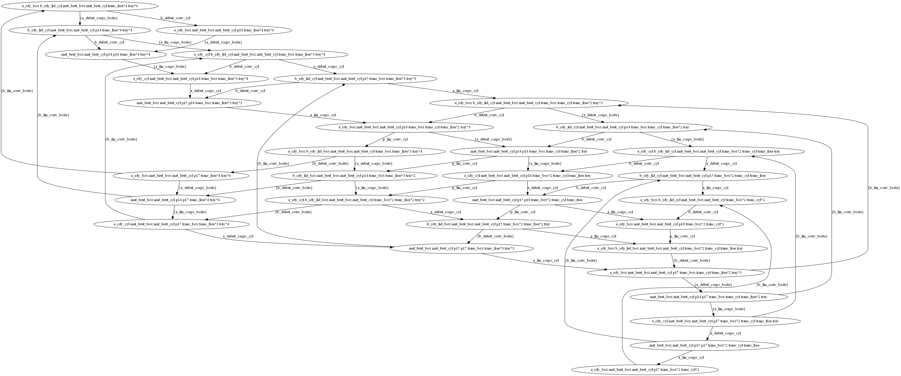

MODÉLISATION ET SIMULATION
Présentez d’abord le système dans son ensemble puis expliquez chaque élément spécifiques grâce à des instantanés de simulations.
Le système suivant représente deux robots dont un faisant des boites et des cylindres et l'autre faisant des couvercles et les mettant sur les produits fait par le premier robot. Lorsque les couvercles sont mis, chaque produit fini est storé dans un entrepôt.
Pour commencer, les matériaux bruts sont représentés par mat_brut_box et mat_brut_cyl. Par la suite, tout ce qui touche au robot A est représenté avec un nom qui commence par a_. Il en est de même pour le robot B avec ces noms qui commencent par b_. Donc, avec les matériaux bruts, on produit des boites et des cylindres (a_prod_box, a_prod_cyl). Lorsqu'une boite ou un cylindre est terminé, celui-ci est transféré pour lui poser un couvercle (trans_box, trans_cyl). Lorsqu'un couvercle est apposé sur une boite ou un cylindre (b_prod_lid_box, b_prod_lid_cyl) on le store dnas un entrepôt (box_done, cyl_done, storing_box, storing_cyl). L'élément trans_free représente le nombre de palette libre pour transporter les divers produits. Une nouvelle palette devient disponible lorsqu'un produit a été livré au robot B. Un maximum de 6 palettes est disponible dans le système et qui est représenté par l'élément tray. Le compte du nombre de produit fini est contenu dans les éléments box et cyl.

VÉRIFICATION COMPORTEMENTALE
Éliminez les places puits et présentez votre graphe d’accessibilité ainsi que votre interprétation concernant les propriétés comportementales de votre système.
NIGEL TODO
VÉRIFICATION STRUCTURELLE
Présentez les P-invariants et les T-invariants ainsi que votre interprétation de ceux-ci. Voici quelques propriétés que vous devriez tenir compte dans votre analyse comportementale (2) et votre analyse structurelle (3) : Le caractère borné du réseau; Les possibilités d’interblocage; L’accessibilité; La vivacité; L’alternance stricte entre la production des boîtes et celle des cylindres; L’utilisation des palettes; Toute autre particularité dérivée de l’analyse des invariants.
| Nom | Description |
|---|---|
| a_rdy_box | Production de boite prête. |
| a_rdy_cyl | Production de cylindre prête. |
| trans_box | État qui détermine lorsqu'une boite est en transition vers le robot B. |
| trans_free | Nombre de palette qui sont libres pour effectuer le transfert du robot A vers le robot B. |
| trans_cyl | État qui détermine lorsqu'un cylindre est en transition vers le robot B. |
| tray | Nombre de palette total disponible dans le système. |
| b_rdy_lid_box | Production de couvercle pour boite prête. |
| b_rdy_lid_cyl | Production de couvercle pour cylindre prête. |
| box_done | Boite prête a être acheminé vers l'entrepôt. |
| box | Store le nombre de boite dans l'entrepôt. |
| cyl_done | Cylindre prêt a être acheminé vers l'entrepôt. |
| cyl | Store le nombre de cylindre dans l'entrepôt. |
| mat_brut_box | Matériaux brut requis pour effectuer la confection d'une boite. |
| mat_brut_cyl | Matériaux brut requis pour effectuer la confection d'un cylindre. |
| Nom | Description |
|---|---|
| a_prod_box | Robot A produit une boite avec l'aide des matériaux bruts. |
| a_prod_cyl | Robot A produit un cylindre avec l'aide des matériaux bruts. |
| b_prod_lid_box | Robot B produit un couvercle et le met sur une boite. |
| b_prod_lid_cyl | Robot B produit un couvercle et le met sur un cylindre. |
| storing_box | Permet de storer une boite dans l'entrepôt. |
| storing_cyl | Permet de storer un cylindre dans l'entrepôt. |
TRANSFORMATION DE BOUSSIN
Présentez, étape par étape, l’application des transformations de Boussin sur votre système et comparez les propriétés comportementale de ce résidu avec celles présentées en (2). Sauvegardez dans un fichier le modèle final (l’analyse comportementale sur ce dernier devrait fournir les mêmes conclusions qu’en 2)
LISTE DES RÈGLES
- R1: Suppression d’une transition isolée
- R2: Suppression d’une place isolée
- R3: Suppression d’une transition isolée bouclée
- R4: Suppression d’une place isolée bouclée
- R5: Fusion de plusieurs transitions isolées
- R6: Fusion de plusieurs places isolées
TRANSFORMATIONS
- On applique R2 sur p14. Les transitions a_debut_corps_boîte et a_fin_corps_boîte sont fusionnées en une seule transition nommée a_prod_corps_boîte.
- On applique R2 sur p15. Les transitions a_debut_corps_cyl et a_fin_corps_cyl sont fusionnées en une seule transition nommée a_prod_corps_cyl.
- On applique R2 sur p17. Les transitions a_debut_couv_boîte et a_fin_couv_boîte sont fusionnées en une seule transition nommée a_prod_couv_boîte.
- On applique R2 sur p18. Les transitions a_debut_couv_cyl et a_fin_couv_cyl sont fusionnées en une seule transition nommée a_prod_couv_cyl.
- On applique R4 sur mat_brut_box.
- On applique R4 sur mat_brut_cyl.

QUESTIONS HYPOTHÉTIQUES
Y a-t-il des moments d’attente potentiels?
Oui, il peut y avoir des moments d’attentes potentiel puisque l’exécution des deux robots ne se fait pas réellement en parallèle et il y a un nombre d’itération maximal qu’un robot peut faire sans devoir attendre une itération de l’autre robot.
- Pour ce qui est du nombre de palettes en circulation, le robot A un utilise 3, 2 + 1, palettes pour faire une itération complète. Ainsi, le robot A peut faire 2 itérations complètes avant de devoir bloquer sans fonctionnement de B.
- Pour ce qui est de l’espace entre les deux robots, il en va de même. Le robot A utilise 2, 1 + 1, espace entre les deux robots pour stocker une itération complète. Ainsi, le robot A peut faire 2 itérations complètes avant de devoir bloquer sans fonctionnement de B.
Ainsi, le robot A est bloqué après deux itération complète sans que le robot B fonctionne.
Cette distribution des quantités (espaces et palettes) est-elle optimale?
Le nombre de palettes disponible doit rester un multiple de X, où X est le nombre de palette en circulation, Y le nombre de palettes disponible pour transporter des boîtes et Z le nombre de palettes disponible pour transporter des cylindres. Donc, Y et Z doivent être des multiples de X comme par exemple si X = 6, Y = 2 et Z = 3 ils sont tous des multiples de X. Dans un monde idéal, ou les deux robots fonctionnent réellement en parallèle, le nombre de palettes disponible pour faire un cycle devrait être de 3 et le nombre d’espace de stockage devrait être de 2. Ainsi, le robot A attendrait uniquement lors de la première itération et tous s’enchaînerait bien sans surplus par la suite.
Si la fabrication d’un corps de boîte est deux fois plus long que la fabrication d’un corps de cylindre, quelles seraient les nouvelles (si nécessaire) valeurs optimales pour les constantes (espaces et palettes)?
Les valeurs resteraient les mêmes, car peut importe il va toujours y avoir un moment d’attente et que les valeurs ne dépendent pas du temps.